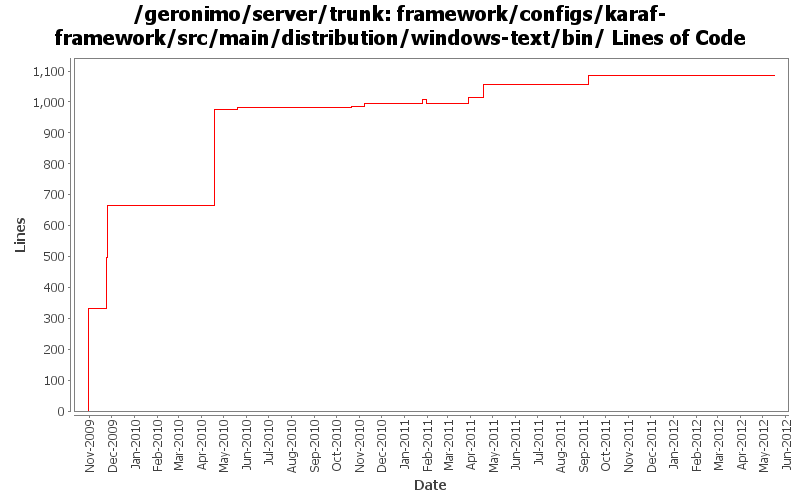

[root]/framework/configs/karaf-framework/src/main/distribution/windows-text/bin

| Author | Changes | Lines of Code | Lines per Change |
|---|---|---|---|
| Totals | 52 (100.0%) | 2338 (100.0%) | 44.9 |
| gawor | 27 (51.9%) | 2194 (93.8%) | 81.2 |
| violalu | 8 (15.4%) | 98 (4.2%) | 12.2 |
| genspring | 5 (9.6%) | 33 (1.4%) | 6.6 |
| hanhongfang | 1 (1.9%) | 11 (0.5%) | 11.0 |
| rwonly | 1 (1.9%) | 1 (0.0%) | 1.0 |
| ashishjain | 1 (1.9%) | 1 (0.0%) | 1.0 |
| xiaming | 3 (5.8%) | 0 (0.0%) | 0.0 |
| rickmcguire | 6 (11.5%) | 0 (0.0%) | 0.0 |
Merge 1333350,1333352,1334031,1334300,GERONIMO-6345,GERONIMO-6348 into trunk
0 lines of code changed in 3 files:
GERONIMO-4540 add more echo message
3 lines of code changed in 1 file:
GERONIMO-4540 add system error output to geronimo.out
1 lines of code changed in 1 file:
GERONIMO-4540 redirect windows console out to var/log/geronimo.out
33 lines of code changed in 2 files:
GERONIMO-6139, java 7 can't recogonize the relative temp dir somehow. Use full path instead in scripts.
1 lines of code changed in 1 file:
XBEAN-183/GERONIMO-6132 Disable wired bundles search by default.
Setting this in geronimo script only to avoid appclient issue for now. The user can still use GERONIMO_OPTS to set it back to true when needed.
2 lines of code changed in 1 file:
GERONIMO-6134 PortOffset for o.a.karaf.shell.ssh (by default, only debug mode will set -Dkaraf.startRemoteShell=true)
1 lines of code changed in 1 file:
%JAVA_AGENT_OPTS% was not added in jpda mode.
1 lines of code changed in 1 file:
GERONIMO-5881 add space support in deploy.bat and client.bat.
40 lines of code changed in 2 files:
GERONIMO-5881 add missing snippnet.
1 lines of code changed in 1 file:
GERONIMO-5881 Remove double quotes, now space and parenthesis works fine on winxp, win2008
20 lines of code changed in 1 file:
ensure bat files and shell scripts have proper svn:eol-style settings
630 lines of code changed in 3 files:
update comments and sync configuration with karaf configuration
2 lines of code changed in 1 file:
GERONIMO-5527: Improved server -clean option handling
2 lines of code changed in 1 file:
GERONIMO-5527 Support -c/--clean option in the server startup script to clean cache for OSGi/tomcat
1, Levarage OSGi standard cache clean flag
2, Externalize other resources to clean to geronimo script.
15 lines of code changed in 1 file:
GERONIMO-5590 startup script does not consume --help option
11 lines of code changed in 1 file:
GERONIMO-5527 provide a way to clean osgi bundle cache when starting the server.
14 lines of code changed in 1 file:
copy legal files from 3.0-M1 release as a base and backport mini-server pom changes
0 lines of code changed in 3 files:
merge in header file changes from M1
0 lines of code changed in 3 files:
enable java agent in app client
7 lines of code changed in 2 files:
GERONIMO-5294 Fix for trunk, refer GERONIMO-5148.
1 lines of code changed in 1 file:
remove karaf scripts and update unix scripts to work without JAVA_HOME or JRE_HOME set
0 lines of code changed in 1 file:
GERONIMO-5213: javaagent updates
1 lines of code changed in 1 file:
GERONIMO-5213: Clean up Geronimo shell and batch scripts. The geronimo, client, deploy, shutdown, and startup scripts work and behave just like they used to (as in Geronimo 2.2)
882 lines of code changed in 8 files:
1) register geronimo-managed mbean server as osgi service, 2) enable osgi jmx bundle to expose rfc139 mbeans, 3) add/update the shutdown command to use rfc139 mbean to stop the container, 4) update the debug properties for jdb to use geronimo defaults
169 lines of code changed in 4 files:
get basic deploy command line tool working. some operations like list-modules or list-targets seem to work
167 lines of code changed in 2 files:
some more logging updates: 1) use geronimo log4j.properties files to configure logging, 2) expose service to configure logging programtically, 3) remove unused geronimo-logging module
2 lines of code changed in 2 files:
add bin/geronimo and bin/client that work just like before. bin/karaf will only start the karaf framework
332 lines of code changed in 2 files: